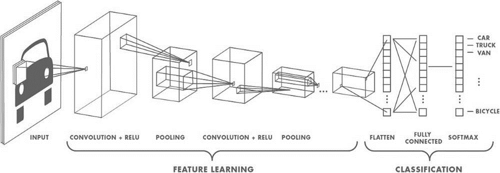

Capsule Networks
1.1. Mạng CNN 1.1.1 Đặc điểm mạng CNN Mạng CNN(Convolutional Neural Networks) hay mạng nơ-ron tích chập mạng nơ-ron xếp chồng nhiều lớp, mỗi lớp gồm các toán tử tích chập (Convolution), giảm mẫu (Subsampling) và phi tuyến (Nonlinearly).
 Lớp Convolution: Lọc thông tin không quan trọng và trích chọn đặc trưng cục bộ nổi bật bằng cách sử dụng các Kernel được huấn luyện. Lớp Subsampling hay Pooling: Gộp lại (pool) những đầu ra có cùng loại gần nhau của lớp Convolution. Nonlinearly: Tăng khả năng mô hình hóa mối quan hệ đầu vào-đầu ra phức tạp. CNN có các đặc điểm phù hợp cho phân tích, hiểu dữ liệu ảnh: CNN sử dụng nhiều lớp của những bộ phát hiện đặc trưng được học (là các kernel chạy qua không gian ma trận của ảnh). Các bộ phát hiện đặc trưng có tính cục bộ, mỗi loại tính toán trên lần lượt các vùng trong ảnh. Phạm vi không gian lớn hơn ở các lớp sâu hơn hay các thông tin mức cao sẽ ở lớp cao hơn. x Các lớp trích xuất đặc trưng được xen kẽ với các lớp giảm mẫu, gộp lại (pool) những đầu ra của các bộ phát hiện đặc trưng cùng loại gần nhau.
Deal with it!